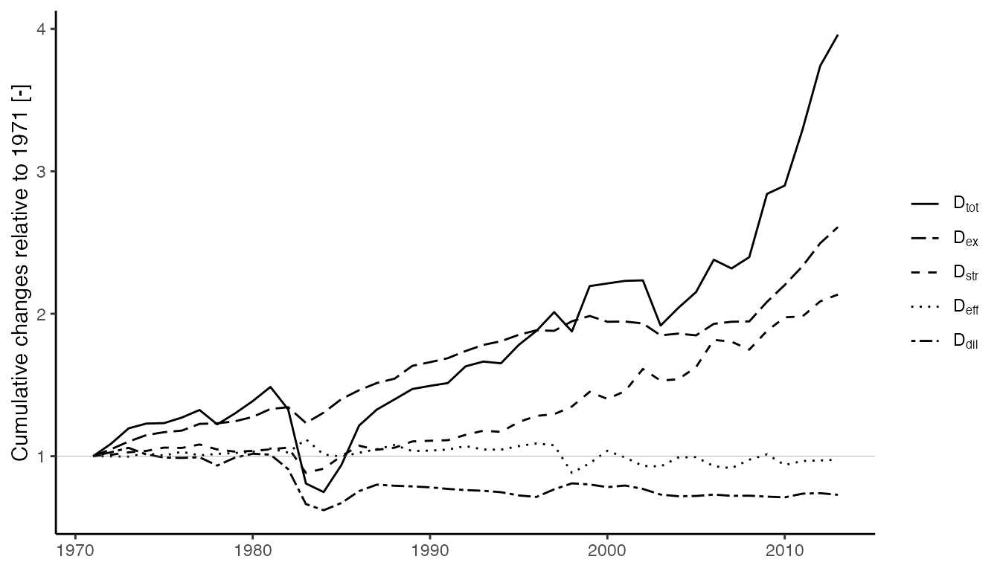

Use cases and examples for LMDIR
Matthew Kuperus Heun
2024-07-22
Source:vignettes/LMDIR.Rmd
LMDIR.RmdIntroduction
Log-mean divisia index (LMDI) decomposition analysis is an important technique for understanding causes of changes in an energy composite over time. The technique was pioneered by B.W. Ang and is described in detail in Ang (2005). LMDI decomposes an energy aggregate by factors and categories.
Heun and Brockway (2019) developed a matrix representation of the LMDI mathematics that works well with the Physical Supply Use Table (PSUT) framework developed by Heun et al. (2018). This vignette describes and provides examples for the matrix method for LMDI decomposition analysis. This vignette is a version of Section S3 of the Supplemental Information to Heun and Brockway (2019).
Description of the matrix method for LMDI decomposition analysis
The LMDI approach pioneered by Ang et al. (1998) and described in detail by Liu and Ang (2003) decomposes an energy aggregate () by factors () that cause to change over time. (In this vignette, we adopt the notation of Ang (2005).)
Noting that at a given time every combination of energy category () and decomposition factor () has an associated numerical value for the decomposition factor (), the matrix approach to LMDI decomposition analysis begins with formation of an matrix for each time of interest. Rows of contain energy categories (indexed by ) of the aggregate () and columns of contain decomposition factors (indexed by ).
Column vector contains the value of each energy category () and is formed from row products of .
At any given time, the energy aggregate () is obtained by the column sum of elements in the vector
where is a column vector of 1’s (an identity vector) of same size as .
Additive () and multiplicative () changes in the energy aggregate () between two adjacent times, an initial time (superscript ) and a later time (superscript ), are calculated by
and
A matrix is formed for two adjacent times by
with care taken to address the zero-value problem noted by Ang et al. (1998) in Table 2 and discussed at length by Wood and Lenzen (2006).
Given the matrix defined by the equation for above, a vector is calculated by column sums of
where entries in give the additive contribution of the decomposition factor to changes in from time to time .
Multiplicative decomposition is obtained with the row vector calculated by
where entries in give the multiplicative contribution of the decomposition factor to changes in from time to time .
Verification can be performed by
and
Cumulative changes in over many time periods can be calculated by cumulative sums of the row vector for additive decomposition and by cumulative products of the row vector for multiplicative decomposition.
Application of the matrix method to energy conversion chain (ECC) analysis
An energy conversion chain (ECC) is a set of energy carriers, energy transformation devices, and energy services within spatial and temporal boundaries of interest. For the purposes of this vignette, an ECC comprises primary, final, and useful energy and exergy flowing through society.
Following Brockway et al. (2015), one energy aggregate from an ECC is total useful exergy supplied to the economy (). is comprised of subcategories (, Heat, Electric, Mechanical Drive (Petroleum), and Muscle Work) and subsubcategories (, such as KE–Fans and MD–Tractors). The decomposition factors are given in the following table.
| factor | description |
|---|---|
| Total primary exergy supplied to the economy | |
| Allocation ratio of primary exergy () to subcategory () (Heat, Electric, Mechanical drive, Muscle work) | |
| Allocation ratio of exergy from subcategory ( to subsubcategory () (MD - Diesel trains, Electric lights, etc.) | |
| Primary-to-useful thermodynamic efficiency of subsubcategory () |
In equation form, the energy aggregate () is calculated by
and
Note that is the embodied primary exergy of the useful exergy produced by the subsubcategory ().
Simple example
To demonstrate the matrix approach to LMDI decomposition analysis, we
begin with a simple example that is small enough to allow replication of
the results by hand calculations if desired
but sufficient detail to illustrate features of the calculations.
A data frame of
matrices is the starting point for a simple example. The example has two
fictitious countries (AB and YZ) and covers
four years (1971–1974). Countries AB and YZ
are identical for the purposes of illustration.
library(dplyr)
library(ggplot2)
library(LMDIR)
library(magrittr)
library(matsbyname)
library(matsindf)
library(tidyr)
DF <- create_simple_LMDI()
DF
#> Country Year X
#> 1 AB 1971 1, 4, 10, 5, 2, 3
#> 2 AB 1972 4, 5, 5, 6, 3, 4
#> 3 AB 1973 8, 5, 2, 7, 4, 5
#> 4 AB 1974 10, 6, 1, 8, 5, 6
#> 5 YZ 1971 1, 4, 10, 5, 2, 3
#> 6 YZ 1972 4, 5, 5, 6, 3, 4
#> 7 YZ 1973 8, 5, 2, 7, 4, 5
#> 8 YZ 1974 10, 6, 1, 8, 5, 6For the remainder of these examples, only the first four rows will be
shown. (Rows 5–8 for country YZ are the same as rows 1–4
for country AB.)
The X column of the data frame contains
matrices. The
matrices contain all the information about energy categories and
factors. The
matrices are all that is needed to perform the LMDI analysis.
DF[1:4, ]$X
#> [[1]]
#> factor 1 factor 2 factor 3
#> subsubcat 1 1 10 2
#> subsubcat 2 4 5 3
#> attr(,"rowtype")
#> [1] "subsubcat"
#> attr(,"coltype")
#> [1] "factor"
#>
#> [[2]]
#> factor 1 factor 2 factor 3
#> subsubcat 1 4 5 3
#> subsubcat 2 5 6 4
#> attr(,"rowtype")
#> [1] "subsubcat"
#> attr(,"coltype")
#> [1] "factor"
#>
#> [[3]]
#> factor 1 factor 2 factor 3
#> subsubcat 1 8 2 4
#> subsubcat 2 5 7 5
#> attr(,"rowtype")
#> [1] "subsubcat"
#> attr(,"coltype")
#> [1] "factor"
#>
#> [[4]]
#> factor 1 factor 2 factor 3
#> subsubcat 1 10 1 5
#> subsubcat 2 6 8 6
#> attr(,"rowtype")
#> [1] "subsubcat"
#> attr(,"coltype")
#> [1] "factor"To see how the factors affect the aggregate over time, we can perform
the LMDI decomposition analysis. But we first group by
Country to ensure that each Country will be
treated separately. (lmdi() respects grouping.)
The result of the call to lmdi() is DF with
additional columns.
glimpse(res)
#> Rows: 8
#> Columns: 13
#> Groups: Country [2]
#> $ Country <chr> "AB", "AB", "AB", "AB", "YZ", "YZ", "YZ", "YZ"
#> $ Year <dbl> 1971, 1972, 1973, 1974, 1971, 1972, 1973, 1974
#> $ X <list> <<matrix[2 x 3]>>, <<matrix[2 x 3]>>, <<matrix[2 x 3]>>, <<…
#> $ V <list> 80, 180, 239, 338, 80, 180, 239, 338
#> $ Z <list> <<matrix[2 x 3]>>, <<matrix[2 x 3]>>, <<matrix[2 x 3]>>, <<…
#> $ dV_agg <list> 0, 100, 59, 99, 0, 100, 59, 99
#> $ D_agg <list> 1, 2.25, 1.327778, 1.414226, 1, 2.25, 1.327778, 1.414226
#> $ dV <list> <<matrix[3 x 1]>>, <<matrix[3 x 1]>>, <<matrix[3 x 1]>>, <…
#> $ D <list> <<matrix[3 x 1]>>, <<matrix[3 x 1]>>, <<matrix[3 x 1]>>, <…
#> $ dV_agg_cum <list> 0, 100, 159, 258, 0, 100, 159, 258
#> $ D_agg_cum <list> 1, 2.25, 2.9875, 4.225, 1, 2.25, 2.9875, 4.225
#> $ dV_cum <list> <<matrix[3 x 1]>>, <<matrix[3 x 1]>>, <<matrix[3 x 1]>>, <…
#> $ D_cum <list> <<matrix[3 x 1]>>, <<matrix[3 x 1]>>, <<matrix[3 x 1]>>, <…Each additional column provides results of the LMDI analysis. Both additive and multiplicative results are provided.
The V column contains aggregates
(),
with the first year assigned a value of 0.
The Z column contains
matrices, with the first year assigned a value of 1.
res[1:4, ]$Z
#> [[1]]
#> factor 1 factor 2 factor 3
#> subsubcat 1 0 0 0
#> subsubcat 2 0 0 0
#> attr(,"rowtype")
#> [1] "subsubcat"
#> attr(,"coltype")
#> [1] "factor"
#>
#> [[2]]
#> factor 1 factor 2 factor 3
#> subsubcat 1 50.47438 -25.23719 14.76281
#> subsubcat 2 19.31569 15.78206 24.90225
#> attr(,"rowtype")
#> [1] "subsubcat"
#> attr(,"coltype")
#> [1] "factor"
#>
#> [[3]]
#> factor 1 factor 2 factor 3
#> subsubcat 1 42.96021 -56.79031 17.83010
#> subsubcat 2 0.00000 22.47129 32.52871
#> attr(,"rowtype")
#> [1] "subsubcat"
#> attr(,"coltype")
#> [1] "factor"
#>
#> [[4]]
#> factor 1 factor 2 factor 3
#> subsubcat 1 12.65498 -39.30996 12.65498
#> subsubcat 2 41.35566 30.28868 41.35566
#> attr(,"rowtype")
#> [1] "subsubcat"
#> attr(,"coltype")
#> [1] "factor"Note that calculating the entries in the
matrices requires evaluating 8 degenerate cases as shown in Table 2,
p. 492 of Ang et
al. (1998). Evaluation of the 8
degenerate cases is performed by the Zij() function.
Zij
#> function(i = NULL, j = NULL, X_0 = NULL, X_T = NULL,
#> v_0i1 = matsbyname::rowprods_byname(X_0)[i, 1],
#> v_Ti1 = matsbyname::rowprods_byname(X_T)[i, 1],
#> X_0ij = X_0[i, j],
#> X_Tij = X_T[i, j]){
#>
#> # Check the conditions, found in Table 2, p. 492 of
#> # B.W. Ang and F.Q. Zhang and Ki-Hong Choi, 1998,
#> # Factorizing changes in energy and environmental indicators through decomposition,
#> # Energy, Volume 23, Number 6, pp. 489-495.
#> if (v_0i1 == 0 & v_Ti1 > 0 & X_0ij == 0 & X_Tij > 0) {
#> # Case 1
#> return(v_Ti1)
#>
#> } else if (v_0i1 > 0 & v_Ti1 == 0 & X_0ij > 0 & X_Tij == 0) {
#> # Case 2
#> return(-v_0i1)
#>
#> } else if (v_0i1 == 0 & v_Ti1 > 0 & X_0ij > 0 & X_Tij > 0) {
#> # Case 3
#> return(0)
#>
#> } else if (v_0i1 > 0 & v_Ti1 == 0 & X_0ij > 0 & X_Tij > 0) {
#> # Case 4
#> return(0)
#>
#> } else if (v_0i1 == 0 & v_Ti1 == 0 & X_0ij > 0 & X_Tij > 0) {
#> # Case 5
#> return(0)
#>
#> } else if (v_0i1 == 0 & v_Ti1 == 0 & X_0ij == 0 & X_Tij == 0) {
#> # Case 6
#> return(0)
#>
#> } else if (v_0i1 == 0 & v_Ti1 == 0 & X_0ij > 0 & X_Tij == 0) {
#> # Case 7
#> return(0)
#>
#> } else if (v_0i1 == 0 & v_Ti1 == 0 & X_0ij == 0 & X_Tij > 0) {
#> # Case 8
#> return(0)
#>
#> } else if (v_0i1 > 0 & v_Ti1 > 0 & X_0ij > 0 & X_Tij > 0) {
#> # This is the non-degenerate case
#> return(matsbyname::logmean(v_Ti1, v_0i1) * log(X_Tij / X_0ij))
#> }
#> # We should never get here.
#> stop("Unknown conditions for v_0i1, v_Ti1, X_0ij, and X_Tij in Zij")
#> }
#> <bytecode: 0x149166490>
#> <environment: namespace:LMDIR>The dV_agg column contains year-to-year differences in
the aggregate
().
The D_agg column contains year-to-year ratios of the
aggregate
().
res$D_agg %>% unlist()
#> [1] 1.000000 2.250000 1.327778 1.414226 1.000000 2.250000 1.327778 1.414226The dV column contains
vectors.
res[1:4, ]$dV
#> [[1]]
#> subsubcat
#> factor 1 0
#> factor 2 0
#> factor 3 0
#> attr(,"rowtype")
#> [1] "factor"
#> attr(,"coltype")
#> [1] "subsubcat"
#>
#> [[2]]
#> subsubcat
#> factor 1 69.790066
#> factor 2 -9.455126
#> factor 3 39.665060
#> attr(,"rowtype")
#> [1] "factor"
#> attr(,"coltype")
#> [1] "subsubcat"
#>
#> [[3]]
#> subsubcat
#> factor 1 42.96021
#> factor 2 -34.31903
#> factor 3 50.35881
#> attr(,"rowtype")
#> [1] "factor"
#> attr(,"coltype")
#> [1] "subsubcat"
#>
#> [[4]]
#> subsubcat
#> factor 1 54.010642
#> factor 2 -9.021285
#> factor 3 54.010642
#> attr(,"rowtype")
#> [1] "factor"
#> attr(,"coltype")
#> [1] "subsubcat"The D column contains
vectors.
res[1:4, ]$D
#> [[1]]
#> subsubcat
#> factor 1 1
#> factor 2 1
#> factor 3 1
#> attr(,"rowtype")
#> [1] "factor"
#> attr(,"coltype")
#> [1] "subsubcat"
#>
#> [[2]]
#> subsubcat
#> factor 1 1.7611178
#> factor 2 0.9261913
#> factor 3 1.3794101
#> attr(,"rowtype")
#> [1] "factor"
#> attr(,"coltype")
#> [1] "subsubcat"
#>
#> [[3]]
#> subsubcat
#> factor 1 1.2292846
#> factor 2 0.8479702
#> factor 3 1.2737739
#> attr(,"rowtype")
#> [1] "factor"
#> attr(,"coltype")
#> [1] "subsubcat"
#>
#> [[4]]
#> subsubcat
#> factor 1 1.2081402
#> factor 2 0.9689115
#> factor 3 1.2081402
#> attr(,"rowtype")
#> [1] "factor"
#> attr(,"coltype")
#> [1] "subsubcat"The remaining columns have the _cum suffix and represent
cumulative values. The dV_agg_cum column gives cumulative
differences in the aggregate
()
relative to the first time.
The D_agg_cum column gives cumulative ratios of the
aggregate
()
relative to the first time.
The dV_cum column gives the cumulative differences in
the
vectors relative to the first time.
res[1:4, ]$dV_cum
#> [[1]]
#> subsubcat
#> factor 1 0
#> factor 2 0
#> factor 3 0
#> attr(,"rowtype")
#> [1] "factor"
#> attr(,"coltype")
#> [1] "subsubcat"
#>
#> [[2]]
#> subsubcat
#> factor 1 69.790066
#> factor 2 -9.455126
#> factor 3 39.665060
#> attr(,"rowtype")
#> [1] "factor"
#> attr(,"coltype")
#> [1] "subsubcat"
#>
#> [[3]]
#> subsubcat
#> factor 1 112.75028
#> factor 2 -43.77415
#> factor 3 90.02387
#> attr(,"rowtype")
#> [1] "factor"
#> attr(,"coltype")
#> [1] "subsubcat"
#>
#> [[4]]
#> subsubcat
#> factor 1 166.76092
#> factor 2 -52.79544
#> factor 3 144.03451
#> attr(,"rowtype")
#> [1] "factor"
#> attr(,"coltype")
#> [1] "subsubcat"The D_cum column gives the cumulative ratios of the
vectors relative to the first time.
res[1:4, ]$D_cum
#> [[1]]
#> subsubcat
#> factor 1 1
#> factor 2 1
#> factor 3 1
#> attr(,"rowtype")
#> [1] "factor"
#> attr(,"coltype")
#> [1] "subsubcat"
#>
#> [[2]]
#> subsubcat
#> factor 1 1.7611178
#> factor 2 0.9261913
#> factor 3 1.3794101
#> attr(,"rowtype")
#> [1] "factor"
#> attr(,"coltype")
#> [1] "subsubcat"
#>
#> [[3]]
#> subsubcat
#> factor 1 2.1649150
#> factor 2 0.7853827
#> factor 3 1.7570566
#> attr(,"rowtype")
#> [1] "factor"
#> attr(,"coltype")
#> [1] "subsubcat"
#>
#> [[4]]
#> subsubcat
#> factor 1 2.6155209
#> factor 2 0.7609663
#> factor 3 2.1227708
#> attr(,"rowtype")
#> [1] "factor"
#> attr(,"coltype")
#> [1] "subsubcat"Realistic example (Ghana)
The objective of this analysis is to discern the drivers of changes to useful exergy supplied to the Ghanaian economy over time, expressed in multiplicative form. To achieve this objective, we will perform and report results of an LMDI analysis of the Ghanaian energy conversion chain. This analysis also serves to demonstrate the use of the LMDIR package with data from a real energy conversion chain.
We’ll use data from Heun and Brockway
(2019) for exergy flows through
Ghanaian society. The data frame consists of annual
matrices for Ghana over the period 1971–2013. This data frame is
available as LMDIR::XGH.
glimpse(XGH)
#> Rows: 43
#> Columns: 3
#> $ Country <chr> "GH", "GH", "GH", "GH", "GH", "GH", "GH", "GH", "GH", "GH", "G…
#> $ Year <dbl> 1971, 1972, 1973, 1974, 1975, 1976, 1977, 1978, 1979, 1980, 19…
#> $ X <list> <<matrix[22 x 4]>>, <<matrix[22 x 4]>>, <<matrix[22 x 4]>>, <…Each matrix contains useful exergy subsubcategories (in rows) and factors (in columns) as shown below for Ghana for 2003 and 2004.
prettifyXZ <- function(XZ){
out <- XZ %>%
sort_rows_cols(roworder = c(
# Heat categories (phi_i = 0.622)
"HTH.600.C - Electric heaters", "MTH.100.C - Charcoal stoves",
"MTH.100.C - Kerosene stoves", "MTH.100.C - LPG stoves",
"MTH.100.C - Wood stoves",
# Electricity categories (phi_i = 0.020)
"KE - Fans", "Light - Electric lights",
"Light - Televisions", "LTH.-10.C - Refrigerators",
"MD - Electric motors", "MD - Other appliances",
"MTH.100.C - Electric heaters", "MTH.200.C - Irons",
"MTH.200.C - Electric heaters",
# Liquid petroleum categories (phi_i = 0.131)
"MD - Boat engines", "MD - Diesel cars",
"MD - Diesel trains", "MD - Industry static diesel engines",
"MD - Petrol cars", "MD - Tractors",
# Food and feed categories (phi_i = 0.226)
"MD - Draught animals", "MD - Manual laborers"),
colorder = c("EXp.ktoe", "phi_i", "phi_ij", "eta_ij"))
out[ , "EXp.ktoe"] <- round(out[ , "EXp.ktoe"], 1)
out[ , "phi_i"] <- round(out[ , "phi_i"], 3)
out[ , "phi_ij"] <- round(out[ , "phi_ij"], 3)
out[ , "eta_ij"] <- round(out[ , "eta_ij"], 3)
return(out)
}
XGH %>%
filter(Year == 2003) %>%
extract2("X") %>%
extract2(1) %>%
prettifyXZ()
#> EXp.ktoe phi_i phi_ij eta_ij
#> HTH.600.C - Electric heaters 7911.4 0.519 0.005 0.343
#> MTH.100.C - Charcoal stoves 7911.4 0.519 0.328 0.015
#> MTH.100.C - Kerosene stoves 7911.4 0.519 0.031 0.064
#> MTH.100.C - LPG stoves 7911.4 0.519 0.015 0.085
#> MTH.100.C - Wood stoves 7911.4 0.519 0.622 0.024
#> KE - Fans 7911.4 0.081 0.035 0.069
#> Light - Electric lights 7911.4 0.081 0.211 0.023
#> Light - Televisions 7911.4 0.081 0.039 0.001
#> LTH.-10.C - Refrigerators 7911.4 0.081 0.212 0.026
#> MD - Electric motors 7911.4 0.081 0.359 0.487
#> MD - Other appliances 7911.4 0.081 0.015 0.487
#> MTH.100.C - Electric heaters 7911.4 0.081 0.090 0.105
#> MTH.200.C - Irons 7911.4 0.081 0.016 0.222
#> MTH.200.C - Electric heaters 7911.4 0.081 0.024 0.181
#> MD - Boat engines 7911.4 0.188 0.050 0.141
#> MD - Diesel cars 7911.4 0.188 0.345 0.123
#> MD - Diesel trains 7911.4 0.188 0.024 0.162
#> MD - Industry static diesel engines 7911.4 0.188 0.192 0.261
#> MD - Petrol cars 7911.4 0.188 0.368 0.160
#> MD - Tractors 7911.4 0.188 0.020 0.062
#> MD - Draught animals 7911.4 0.212 0.789 0.006
#> MD - Manual laborers 7911.4 0.212 0.211 0.018
#> attr(,"rowtype")
#> [1] "category"
#> attr(,"coltype")
#> [1] "factor"
XGH %>%
filter(Year == 2004) %>%
extract2("X") %>%
extract2(1) %>%
prettifyXZ()
#> EXp.ktoe phi_i phi_ij eta_ij
#> MTH.100.C - Charcoal stoves 7964.8 0.499 0.350 0.015
#> MTH.100.C - Kerosene stoves 7964.8 0.499 0.035 0.059
#> MTH.100.C - LPG stoves 7964.8 0.499 0.020 0.077
#> MTH.100.C - Wood stoves 7964.8 0.499 0.595 0.024
#> KE - Fans 7964.8 0.059 0.036 0.096
#> Light - Electric lights 7964.8 0.059 0.210 0.032
#> Light - Televisions 7964.8 0.059 0.040 0.002
#> LTH.-10.C - Refrigerators 7964.8 0.059 0.222 0.036
#> MD - Electric motors 7964.8 0.059 0.350 0.680
#> MD - Other appliances 7964.8 0.059 0.015 0.680
#> MTH.100.C - Electric heaters 7964.8 0.059 0.088 0.146
#> MTH.200.C - Irons 7964.8 0.059 0.016 0.309
#> MTH.200.C - Electric heaters 7964.8 0.059 0.024 0.230
#> MD - Boat engines 7964.8 0.227 0.047 0.137
#> MD - Diesel cars 7964.8 0.227 0.338 0.123
#> MD - Diesel trains 7964.8 0.227 0.024 0.157
#> MD - Industry static diesel engines 7964.8 0.227 0.185 0.246
#> MD - Petrol cars 7964.8 0.227 0.387 0.152
#> MD - Tractors 7964.8 0.227 0.020 0.061
#> MD - Draught animals 7964.8 0.215 0.787 0.006
#> MD - Manual laborers 7964.8 0.215 0.213 0.018
#> attr(,"rowtype")
#> [1] "category"
#> attr(,"coltype")
#> [1] "factor"Note that row and column ordering is provided for readability. The ordered rows show identical values of for allocation to the subcategories of Heat, Electricity, Mechanical drive (fueled by petroleum), and Muscle work (fueled by food and feed). Column order follows flows of energy and exergy through the economy, from primary stage to allocation to subcategories through allocation to subsubcategories and, finally, to a primary-to-useful efficiency for each task. All unique values sum to 1. (Specifically for 2003, 0.519 + 0.081 + 0.188 + 0.212 = 1.) Within each subcategory, values sum to 1. (E.g., for Mechanical drive fueled by food and feed, 0.789 + 0.211 = 1)
Perform the LMDI decomposition analysis
To perform LMDI decomposition analysis, we use the
lmdi() function after grouping on metadata variables (in
this case, only Country).
fillrowX <- matrix(c(1, 1, 0, 1), byrow = TRUE, nrow = 1, ncol = 4,
dimnames = list("row",
c("EXp.ktoe", "phi_i", "phi_ij", "eta_ij")))
GHlmdi <- XGH %>%
group_by(Country) %>%
lmdi(fillrow = list(fillrowX))
glimpse(GHlmdi)
#> Rows: 43
#> Columns: 13
#> Groups: Country [1]
#> $ Country <chr> "GH", "GH", "GH", "GH", "GH", "GH", "GH", "GH", "GH", "GH",…
#> $ Year <dbl> 1971, 1972, 1973, 1974, 1975, 1976, 1977, 1978, 1979, 1980,…
#> $ X <list> <<matrix[22 x 4]>>, <<matrix[22 x 4]>>, <<matrix[22 x 4]>>…
#> $ V <list> 259.04, 281.4059, 309.6553, 318.3589, 319.1577, 329.2552, …
#> $ Z <list> <<matrix[22 x 4]>>, <<matrix[22 x 4]>>, <<matrix[22 x 4]>>…
#> $ dV_agg <list> 0, 22.36586, 28.24945, 8.703568, 0.7987694, 10.09758, 13.8…
#> $ D_agg <list> 1, 1.086341, 1.100387, 1.028107, 1.002509, 1.031638, 1.041…
#> $ dV <list> <<matrix[4 x 1]>>, <<matrix[4 x 1]>>, <<matrix[4 x 1]>>, <…
#> $ D <list> <<matrix[4 x 1]>>, <<matrix[4 x 1]>>, <<matrix[4 x 1]>>, <…
#> $ dV_agg_cum <list> 0, 22.36586, 50.61531, 59.31888, 60.11765, 70.21522, 84.03…
#> $ D_agg_cum <list> 1, 1.086341, 1.195396, 1.228995, 1.232079, 1.271059, 1.324…
#> $ dV_cum <list> <<matrix[4 x 1]>>, <<matrix[4 x 1]>>, <<matrix[4 x 1]>>, <…
#> $ D_cum <list> <<matrix[4 x 1]>>, <<matrix[4 x 1]>>, <<matrix[4 x 1]>>, <…(The need for and values in fillrowX are described
below.)
A note about special cases for calculating entires in
When a category of useful exergy is present in one year but absent in
an adjacent year, the corresponding row in
or
is missing compared to the other. That happened in Ghana between 2003
and 2004; in 2003, VALCO’s aluminum smelters were operating, but in 2004
they were not. Thus, we treat the
HTH.600.C - Electric heaters row specially in 2004.
For 2004, we insert a row for
HTH.600.C - Electric Heaters and fill it with positive
numbers for primary exergy
(
or EXp,ktoe), allocation from primary exergy to subcategory
(
or phi_i), and thermodynamic efficiency
(
or eta_ij). (The fill values are irrelevant to the
calculated result, so long as they are positive numbers.) We set the
allocation from subcategory to subsubcategory
(
or phi_ij) to 0. This approach reflects the
reality that despite the fact that there is no useful exergy of this
type in 2004, we still have total primary exergy
(),
there is still an allocation of primary exergy to the subcategory
Heat
(),
and if there were electric heaters making
HTH.600.C - Electric heaters in this year, they would have
done so with a non-zero thermodynamic efficiency
().
XGH %>%
filter(Year == 2004) %>%
extract2("X") %>%
extract2(1) %>%
sum_byname(fillrowX) %>%
prettifyXZ()
#> EXp.ktoe phi_i phi_ij eta_ij
#> MTH.100.C - Charcoal stoves 7964.8 0.499 0.350 0.015
#> MTH.100.C - Kerosene stoves 7964.8 0.499 0.035 0.059
#> MTH.100.C - LPG stoves 7964.8 0.499 0.020 0.077
#> MTH.100.C - Wood stoves 7964.8 0.499 0.595 0.024
#> KE - Fans 7964.8 0.059 0.036 0.096
#> Light - Electric lights 7964.8 0.059 0.210 0.032
#> Light - Televisions 7964.8 0.059 0.040 0.002
#> LTH.-10.C - Refrigerators 7964.8 0.059 0.222 0.036
#> MD - Electric motors 7964.8 0.059 0.350 0.680
#> MD - Other appliances 7964.8 0.059 0.015 0.680
#> MTH.100.C - Electric heaters 7964.8 0.059 0.088 0.146
#> MTH.200.C - Irons 7964.8 0.059 0.016 0.309
#> MTH.200.C - Electric heaters 7964.8 0.059 0.024 0.230
#> MD - Boat engines 7964.8 0.227 0.047 0.137
#> MD - Diesel cars 7964.8 0.227 0.338 0.123
#> MD - Diesel trains 7964.8 0.227 0.024 0.157
#> MD - Industry static diesel engines 7964.8 0.227 0.185 0.246
#> MD - Petrol cars 7964.8 0.227 0.387 0.152
#> MD - Tractors 7964.8 0.227 0.020 0.061
#> MD - Draught animals 7964.8 0.215 0.787 0.006
#> MD - Manual laborers 7964.8 0.215 0.213 0.018
#> attr(,"rowtype")
#> [1] "category"
#> attr(,"coltype")
#> [1] "factor"fillrowX triggers special calculation of
values for 2004. When
,
,
,
and
,
we employ Table 2, Row 2 of Ang et al. (1998) to calculate
Z[HTH.600.C - Electric heaters, phi_ij] = -6.416, as shown
below. The other values on the row are 0.0. (If this
example were switched in time such that the smelters were not used in
2003 but turned in 2004, we would employ Table 2, Row 1 of Ang et al. (1998).)
GHlmdi %>%
filter(Year == 2004) %>%
extract2("Z") %>%
extract2(1) %>%
prettifyXZ()
#> EXp.ktoe phi_i phi_ij eta_ij
#> HTH.600.C - Electric heaters 0.0 0.000 -6.416 0.000
#> MTH.100.C - Charcoal stoves 0.1 -0.790 1.360 -0.131
#> MTH.100.C - Kerosene stoves 0.1 -0.311 1.053 -0.726
#> MTH.100.C - LPG stoves 0.0 -0.220 1.595 -0.600
#> MTH.100.C - Wood stoves 0.4 -2.304 -2.660 0.000
#> KE - Fans 0.0 -0.499 0.039 0.532
#> Light - Electric lights 0.0 -0.983 -0.017 1.066
#> Light - Televisions 0.0 -0.009 0.001 0.011
#> LTH.-10.C - Refrigerators 0.0 -1.148 0.163 1.248
#> MD - Electric motors 0.8 -35.316 -2.905 37.624
#> MD - Other appliances 0.0 -1.477 0.114 1.574
#> MTH.100.C - Electric heaters 0.0 -1.904 -0.133 2.018
#> MTH.200.C - Irons 0.0 -0.717 0.055 0.755
#> MTH.200.C - Electric heaters 0.0 -0.844 0.004 0.643
#> MD - Boat engines 0.1 2.083 -0.858 -0.352
#> MD - Diesel cars 0.5 13.033 -1.465 -0.320
#> MD - Diesel trains 0.0 1.175 -0.152 -0.222
#> MD - Industry static diesel engines 0.5 14.775 -3.050 -4.605
#> MD - Petrol cars 0.7 18.268 5.045 -4.713
#> MD - Tractors 0.0 0.383 -0.075 -0.009
#> MD - Draught animals 0.1 0.091 -0.018 -0.037
#> MD - Manual laborers 0.0 0.073 0.055 -0.038
#> attr(,"rowtype")
#> [1] "category"
#> attr(,"coltype")
#> [1] "factor"Presentation of results
The GHlmdi object contains everything needed to present
the results. The focus here is on the ratioed aggregate
(D_agg_cum) and disaggregate (D_cum) factors
that affect changes in useful exergy delivered to the economy. So we
first need to expand the data from matrices to tidy format and select
the desired columns.
GHlmdi_tidy <- GHlmdi %>%
select(Country, Year, D_agg_cum, D_cum) %>%
gather(key = matnames, value = matvals, -Country, -Year) %>%
expand_to_tidy() %>%
select(-colnames, -rowtypes, -coltypes)
head(GHlmdi_tidy, 10)
#> # A tibble: 10 × 5
#> Country Year matnames rownames matvals
#> <chr> <dbl> <chr> <chr> <dbl>
#> 1 GH 1971 D_agg_cum NA 1
#> 2 GH 1971 D_cum eta_ij 1
#> 3 GH 1971 D_cum EXp.ktoe 1
#> 4 GH 1971 D_cum phi_i 1
#> 5 GH 1971 D_cum phi_ij 1
#> 6 GH 1972 D_agg_cum NA 1.09
#> 7 GH 1972 D_cum eta_ij 0.999
#> 8 GH 1972 D_cum EXp.ktoe 1.05
#> 9 GH 1972 D_cum phi_i 1.01
#> 10 GH 1972 D_cum phi_ij 1.03Next, we map the values of matnames and
rownames to variable names appropriate for graphing,
according to the table below.
| graph variable | factor | description |
|---|---|---|
| Dtot | Total change in useful exergy | |
| Dex | Primary exergy supplied to the economy | |
| Dstr | Allocation of primary exergy () to subcategory () (Heat, Electric, Mechanical drive, Muscle work) or main class structural change | |
| Deff | Primary-to-useful thermodynamic efficiency of subsubcategory () | |
| Ddil | Allocation ratio of exergy from subcategory ( to subsubcategory () (MD - Diesel trains, Electric lights, etc.) or subclass structural change |
We also set the levels of the Factors, and thereby the
order in which they will appear in the legend of the graph. We choose an
order that reflects the vertical positioning of the lines on the
graph.
GHlmdi_forgraphing <- GHlmdi_tidy %>%
mutate(
Factor = case_when(
matnames == "D_agg_cum" ~ "D_tot",
rownames == "EXp.ktoe" ~ "D_ex",
rownames == "eta_ij" ~ "D_eff",
rownames == "phi_i" ~ "D_str",
rownames == "phi_ij" ~ "D_dil"
),
Factor = factor(Factor, levels = c("D_tot", "D_ex", "D_str", "D_eff", "D_dil"))
) %>%
rename(
value = matvals
) %>%
select(-rownames, -matnames) %>%
group_by(Country, Factor)
head(GHlmdi_forgraphing, 10)
#> # A tibble: 10 × 4
#> # Groups: Country, Factor [5]
#> Country Year value Factor
#> <chr> <dbl> <dbl> <fct>
#> 1 GH 1971 1 D_tot
#> 2 GH 1971 1 D_eff
#> 3 GH 1971 1 D_ex
#> 4 GH 1971 1 D_str
#> 5 GH 1971 1 D_dil
#> 6 GH 1972 1.09 D_tot
#> 7 GH 1972 0.999 D_eff
#> 8 GH 1972 1.05 D_ex
#> 9 GH 1972 1.01 D_str
#> 10 GH 1972 1.03 D_dilFinally, we create a graph showing both the total changes () and the multiplicative factors that comprise the total change (, , , and ).
GHlmdi_forgraphing %>%
ggplot(mapping = aes(x = Year, y = value, linetype = Factor)) +
geom_line() +
geom_hline(yintercept = 1, colour = "gray50", linewidth = 0.1) +
labs(x = NULL, y = "Cumulative changes relative to 1971 [-]", linetype = NULL, colour = NULL) +
scale_linetype_manual(values = c("D_tot" = 1, "D_ex" = 5, "D_str" = 2, "D_dil" = 6, "D_eff" = 3),
labels = c("D_tot" = expression(D[tot]),
"D_ex" = expression(D[ex]),
"D_str" = expression(D[str]),
"D_dil" = expression(D[dil]),
"D_eff" = expression(D[eff]))) +
theme_classic()
Note that the graph above is the same as Figure 7 of Heun and Brockway (2019).
Conclusion
The LMDIR package provides a convenient and powerful
capability for log-mean divisia index decomposition analysis of energy
conversion chains expressed as Physical Supply Use Table (PSUT)
matrices.